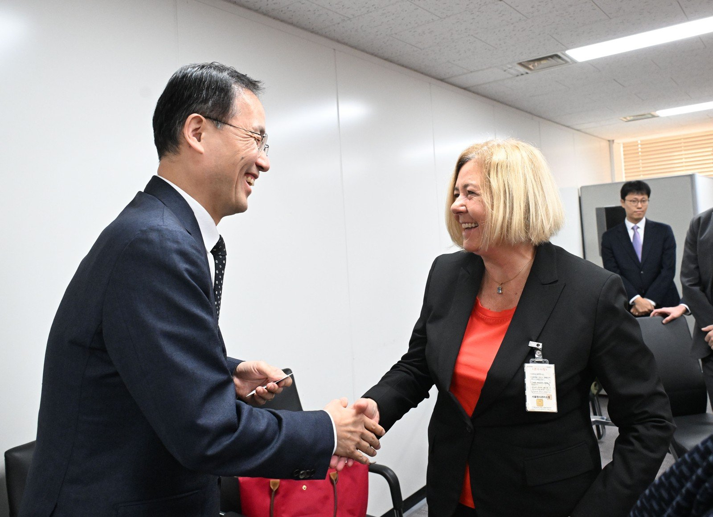
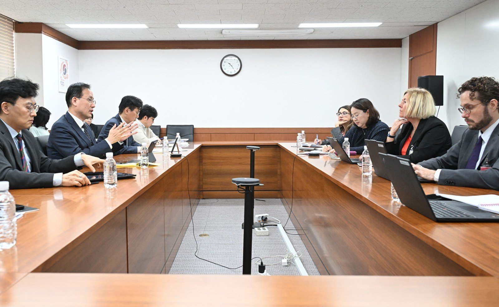

IMF 한국 협의단, 2026년 성장률 3.9%·2027년 3.3% 전망과 추가 통화 긴축 적절 판단
첨단기술에 쏠린 성장 결실과 근로형태 간 임금 격차
2026년 10월 수출 반도체 비중 49.0%
AI경제저널=김갑봉 기자 | 국제통화기금(IMF) 한국 협의단이 17일 2주간의 연례협의를 마쳤다. 협의단은 한국의 실질 국내총생산(GDP) 성장률을 올해 3.9%, 내년 3.3%로 내다봤다. 지난해 성장률은 1.1%로 제시했다.
협의단은 인플레이션 압력이 굳어지지 않게 추가 통화 긴축이 적절하다고 밝혔다. 성장의 결실은 지금까지 주로 첨단기술 산업에 몰렸다고 진단했다. 경제 전반으로는 천천히 퍼질 것으로 봤다.
재정경제부가 이날 배포한 연례협의 결과 발표문(IMF 측 국문 번역본)을 보면, 협의단은 11월 3일부터 17일까지 한국을 방문했다. 코린 들레샤(Corinne Deléchat) IMF 한국 미션단장이 협의단을 이끌었다.
협의단은 정부, 한국은행, 공공기관, 민간 관계자와 의견을 나눴다. 세계 인공지능(AI) 호황이 사상 최대 반도체 수출을 이끌며 기업 실적과 재정수입을 늘리고 있다고 진단했다.

세계경제전망보다 0.6%포인트 높은 전망치
IMF는 10월 13일 낸 세계경제전망(WEO) 부속표에서 한국 성장률을 올해 3.3%, 내년 2.8%로 봤다. 협의단의 잠정 전망은 이보다 올해 0.6%포인트, 내년 0.5%포인트 높다(연구소 계산).
한국은행 금융통화위원회(금통위)도 10월 22일 올해와 내년 성장률이 8월 전망치(올해 3.3%, 내년 2.9%)를 상당폭 웃돌 것으로 예상했다. 협의단은 전망을 둘러싼 불확실성이 높고 성장의 하방 위험이 더 크다고 밝혔다.
협의단은 성장 동력으로 첨단기술 산업 수출 급증, 투자 반등, 견조한 소비를 들었다. 산업통상부가 1일 낸 10월 수출입동향(잠정치)을 보면, 10월 수출은 1년 전보다 93.7% 늘었다. 반도체 수출은 259.4% 늘었다.
10월 수출에서 반도체가 차지한 몫은 49.0%다(연구소 계산). 일평균 수출은 76.1% 늘었다. 산업통상부는 자동차 등 품목 설명에서 추석 연휴가 지난해 10월에서 올해 9월로 옮겨 조업일수가 늘었다고 밝혔다. 10월 조업일수는 22일로 1년 전 20일보다 이틀 많다.
추가 통화 긴축과 다소 더 긴축적인 재정
협의단은 경기가 잠재 수준을 웃돌고 물가가 목표치 2%를 넘는다고 봤다. 수요 압력과 특정 부문 집중 위험을 줄이게 단기 거시경제정책의 긴축 기조를 세심하게 조율해야 한다고 밝혔다.
협의단의 물가 전망치는 올해 2.7%, 내년 2.3%다. 국가데이터처가 3일 발표한 10월 소비자물가는 1년 전보다 2.8% 올라, 9월 2.9%보다 0.1%포인트 낮았다.
금통위는 7월 16일 기준금리를 연 2.75%로, 8월 27일 연 3.00%로 올렸다. 10월 22일에는 연 3.00%로 유지했다.
금통위는 중동사태와 주요국 통화·재정정책을 둘러싼 불확실성을 들어 두 차례 인상의 파급영향을 점검할 필요가 있다고 판단했다. 추가 인상의 시기와 속도는 물가·경기 흐름과 금융안정 상황을 보며 정하겠다고 했다. 다음 결정회의는 11월 26일이다.
협의단은 취약 가계와 기업에 선별 지원을 유지하면서 다소 더 긴축적인 재정 기조를 운용하면 총수요 압력 억제에 도움이 될 것이라고 밝혔다. 협의단은 재정 안정화 수단인 미래대응기금 신설을 환영했다.
기획예산처는 8월 21일 미래대응기금 계획을 밝혔다. 최근 10년 평균 추세치를 웃도는 내국세 수입을 기금에 적립하는 구조다. 이 돈을 청년, 성장동력, 지방, 교육·인재 4대 분야에 투자하고, 세입이 둔화될 때 재정 여력을 보강하는 데 쓴다.
정부는 9월 3일 「미래대응기금 설치 및 운용에 관한 법률안」을 국회에 냈다. 기획예산처는 10월 22일 미래대응기금 관련 법률안이 연내 통과되게 국회와 협의하겠다고 밝혔다. 국회 의안정보시스템에서 이 법안은 17일 현재 소관위원회에 상정된 계류의안이다.
협의단은 주택시장 압력 억제와 투자자 보호 강화 같은 당국의 선제 조치가 금융안정 유지에 기여했다고 평가했다. 환율 유연성이 대외 충격을 흡수하는 핵심 기제로 남아야 하고, 외환시장 개입은 무질서한 시장 상황을 막는 경우로 한정해야 한다고 밝혔다.

정보기술 부문에 몰린 수혜와 낮은 고용 유발효과
협의단은 급속한 고령화, 지역 불균형 심화, 기업 간·노동자 간 고르지 않은 생산성 향상을 오래 이어진 구조적 제약으로 들었다.
한국은행 조사총괄팀은 7월 19일 「BOK 이슈노트 제2026-16호」에서 이번 교역조건 개선이 내수로 번지는 효과가 과거보다 클 것으로 판단했다. 다만 그 수혜가 정보기술(IT) 등 특정 부문에 집중됐다고 분석했다.
이슈노트는 가계 부문의 임금 상승과 자본이득이 고소득·고자산층에 편중됐다고 적었다. 이들의 한계소비성향과 자산효과는 상대적으로 낮다. 이슈노트는 반도체 산업의 생산·고용 유발효과가 낮고 제조장비 수입의존도가 높다고 봤다.
이슈노트는 반도체 호조의 성과가 부동산 등 비생산적 부문으로 흘러들 때 금융불균형이 커질 가능성에도 유의해야 한다고 썼다.
정규직 대비 비정규직 시간당 임금 65.2%(2025년 6월)
협의단은 경제활동참가율 제고, 「근로형태 간 임금 격차」 완화, 사회안전망 확충 정책이 가계 소득과 소비를 늘리는 데 도움이 될 것으로 봤다. 발표문은 어떤 근로형태 사이의 격차인지 밝히지 않았다.
고용노동부 고용형태별근로실태조사를 보면 2025년 6월 정규직 시간당 임금총액은 2만8599원, 비정규직은 1만8635원이다. 정규직 대비 비정규직 임금 비율은 65.2%다.
이 비율은 2021년 72.9%, 2022년 70.6%, 2023년 70.9%, 2024년 66.4%였다. 2025년은 2021년보다 7.7%포인트 낮다(연구소 계산).
협의단은 AI 확산을 돕는 지역 성장 거점과 비수도권 생산성 제고 공공투자가 균형 발전에 도움이 될 것으로 봤다. 대외 수요처 다변화와 재생에너지 전환 지속이 대외 충격에 맞설 회복력을 키울 것이라고 밝혔다.
IMF 이사회는 2027년 1월 중 연례협의 보고서를 논의할 예정이다(잠정). IMF는 이번 발표문이 협의단의 잠정 평가라고 밝혔다. 이사회 견해를 반드시 대표하지는 않는다고 덧붙였다.
참고문헌
공식 발표자료
- 「'26년 국제통화기금(IMF) 연례협의 결과」(보도자료, 첨부 2026년 IMF-한국 연례협의 결과 발표문 국문 번역본과 영문 원본), 재정경제부, 2026.11.17., https://www.korea.kr/briefing/pressReleaseView.do?newsId=156789601
- 「2026년 10월 소비자물가동향」(발표 브리핑), 국가데이터처, 2026.11.3., https://www.korea.kr/briefing/policyBriefingView.do?newsId=156787698
- 「미래를 대비하는 새로운 재정운용의 틀 제시 - 제1차 재정운용전략협의회 개최」(보도자료), 기획예산처, 2026.8.21.(KDI 경제교육·정보센터 게재 원문 첨부), https://eiec.kdi.re.kr/policy/materialView.do?num=285626
- 「조용범 차관, 미래대응기금 정책 심포지엄 축사」(보도자료), 기획예산처, 2026.10.22.(KDI 경제교육·정보센터 게재 원문 첨부), https://eiec.kdi.re.kr/policy/materialView.do?num=288409
연구보고서
- 「이번 교역조건 개선은 왜 다른가: 반도체 경기 호조의 실물경제 파급영향」(BOK 이슈노트 제2026-16호), 한국은행 조사총괄팀, 2026.7.19., https://www.bok.or.kr/portal/bbs/P0002353/view.do?nttId=11062977&menuNo=200433
통계·공식 자료
- "World Economic Outlook, October 2026: Online Table A2(실질 GDP)", International Monetary Fund, 2026.10.13., https://www.imf.org/-/media/files/publications/weo/2026/october/english/tablea.pdf
- 「통화정책방향(2026.10.22)」, 한국은행, 2026.10.22., https://www.bok.or.kr/portal/bbs/P0000559/view.do?menuNo=200690&nttId=11065823
- 「한국은행 기준금리 추이」, 한국은행, 2026.11.17. 조회, https://www.bok.or.kr/portal/singl/baseRate/list.do?dataSeCd=01&menuNo=200643
- 「통화정책방향 결정회의 일정」, 한국은행, 2026.11.17. 조회, https://www.bok.or.kr/portal/singl/crncyPolicyDrcMtg/listYear.do?mtgSe=A&menuNo=200755
- 「2026년 10월 수출입 동향」, 산업통상부, 2026.11.1., https://www.motir.go.kr/attach/down/095a2dda9c864e1d90d751f7668a1117/4b9e478693e904949a18e5ab0b8307e4/9a9db098b587ee18b321c826f3707a49
- 「미래대응기금 설치 및 운용에 관한 법률안(정부)」(의안번호 2221052, 2026.9.3. 제안), 국회 의안정보시스템, 2026.11.17. 조회, https://likms.assembly.go.kr/bill/main.do
- 「고용형태에 따른 근로조건 실태 현황」(고용형태별근로실태조사), 고용노동부, e-나라지표, 2026.11.17. 조회, https://www.index.go.kr/unify/idx-info.do?idxCd=1489
사진 출처
- [사진1]·[사진2] 재정경제부 사진뉴스 「이형일 부총리, IMF 연례협의단 면담」, 2026.11.17., https://mofe.go.kr/nw/mosfnw/photoDetail.do?searchNttId1=MOSF_000000000079983&menuNo=4010400
※ 이 기사는 인공지능기자 위민아이(Wemin_AI)와 협력해 작성했습니다.
저작권자 © AI경제저널 무단전재 및 재배포, AI학습 및 활용 금지